リンゴの受粉は虫たちに任した。
2024/04/20
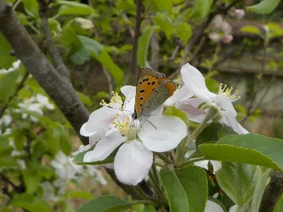
花の上にシジミチョウがとまっていました。
普通に虫がうろうろしているので、人が受粉しなくてもいいんじゃないかと思いました。
園芸本では違う品種で受粉作業をしましょうって書いてありますが、田舎は虫がいっぱいいるから必要ない気がする。
2024/04/20

花の上にシジミチョウがとまっていました。
普通に虫がうろうろしているので、人が受粉しなくてもいいんじゃないかと思いました。
園芸本では違う品種で受粉作業をしましょうって書いてありますが、田舎は虫がいっぱいいるから必要ない気がする。
2023/09/15
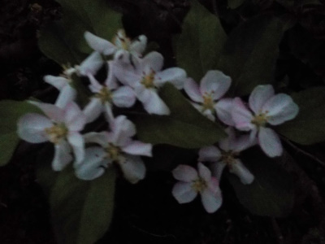
沢山花が咲いていたので暗くてもよく分かりました。
蚊が飛んでくるので、のんびり見れないのが残念でした。
2023/08/08
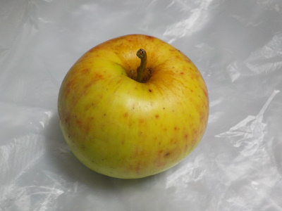
リンゴの木の下にリンゴが転がっていたので、食べてみました。
テッポウムシに食べられて木はボロボロなんですが、よく実が出来たものです。
一部痛んでいたので、そうじゃない部分を食べてみたところ甘くて美味しかったです。
来年はもう出来ないんだろうな。
2023/04/09
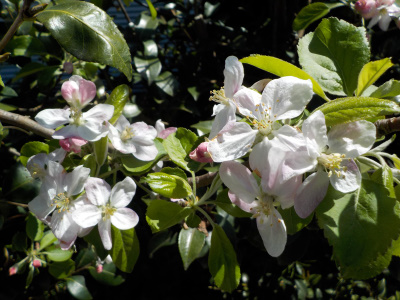
毎年花が咲いたら何度か受粉作業をしていましたが、もうしません。
のんびり花を見ました。
2023/04/01
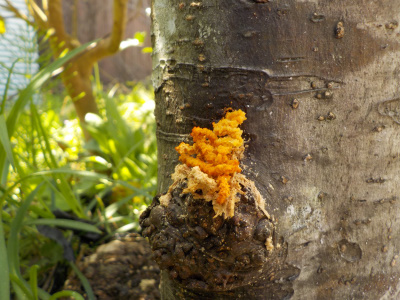
暖かくなったのでテッポウムシが活動しだしました。
もうリンゴは育てないって決めたので殺虫剤の注入はしません。
枯れたら枯れたで仕方ないです。
2022/08/11
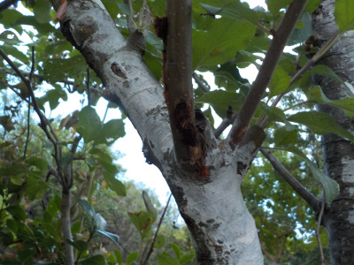
あちこちから木クズが落ちていました。
テッポウムシが入っていますね。
毎年同じだなー。またここで殺虫剤を注入したところで、木は既にテッポウムシに食べられている。
木は弱っているのでまた来年もリンゴは出来ない。
悪循環になっていますね。
冬になったらバッサリ切って小さくしてしまおう。春に花を楽しむくらいにしよう。
2022/06/18
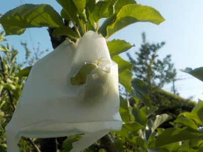
どうやって穴が空いたんでしょうね？
溶けてるような、食べられてるような。
リンゴ自体は綺麗だったので、新しい袋を掛け直しました。
2022/06/04
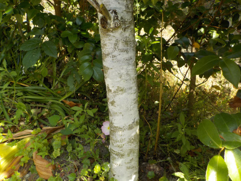
しょっちゅう出てくるテッポウムシ対策でガットサイドSを塗りました。
塗ったのは下の方だけなので、上には入るんだろうな。
2022/05/29
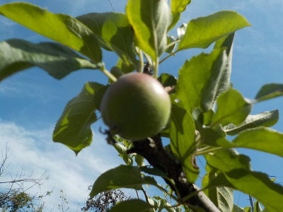
一つだけ実がありました。
一つだけか。一つしかないのか。
こんなものかな。
2022/04/16
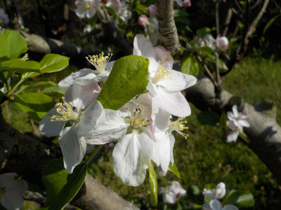
今年もいつものように受粉作業をしました。
毎年実が出来ないので作業しなくてもいい気がします。
リンゴは毛虫や鉄砲虫の被害にあうので、農薬を何度も使わないと実が出来ない気がします。
2021/08/08
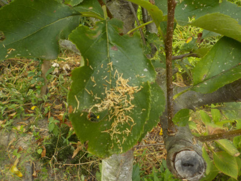
リンゴの葉っぱの上に木の屑が落ちていました。
テッポウムシかな。
リンゴの木を守るために、虫食いの穴から殺虫剤を入れました。
この殺虫剤の成分がリンゴの実に行ったら嫌ですね。
毒リンゴだ。
2021/04/10
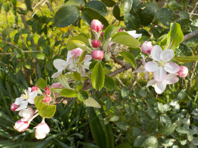
花が咲いたので受粉スタートです。
天候が良かったら3日おきに受粉させようと思っています。
ても我が家のリンゴは最近実が一つも出来ていません。
今年は一つでも収獲したいです。
2020/09/13
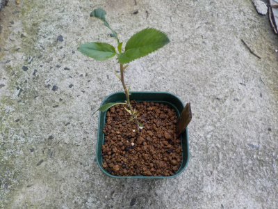
リンゴは小さい苗でも大きい木でも虫に食べられますね。
野生環境では育たないんだろうな。
リンゴ農家はいったいどうしているんだろう。
山間部では毛虫が発生しないんだろうか？
多分農薬をいっぱい使っているんだろうな。家のリンゴもこまめに農薬を使った方がいいんだろか。
農薬いっぱいの家庭果樹って作る意味あるのかな？
2020/05/17
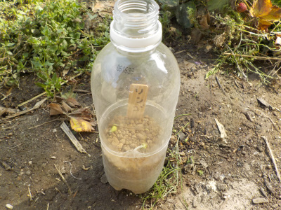
種から出た根っこがひょろひょろと伸びました。
植え替えするときに根っこが長いと、根っこを折ってしまう可能性が高いです。
なので、伸びすぎないうちに土に植え替えました。
2020/05/16
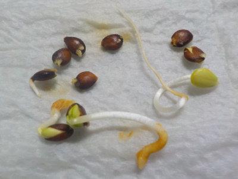
テッポウムシでリンゴが痛んでいるので、サポート用に実生リンゴを育てることにしました。
花が咲けば受粉に使えるし、木を連結すれば栄養を送ることもできます。（たぶん）
花が咲くまでに何年かかるかわかりませんが、そんなに手間がかからないと思うので遊びて育ててみます。
実生リンゴを連結して垣根を作りたいです。
2020/05/02
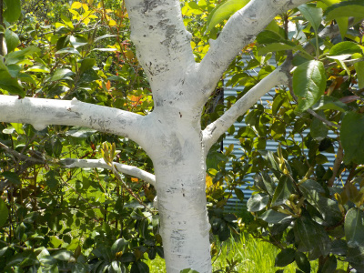
リンゴがテッポウムシの被害にあっていたのでガットサイドSを塗りました。
既に穴が沢山開いているのでどうなるかわかりませんが、部分的でもいいので生き残って欲しいと思っています。
2020/04/25
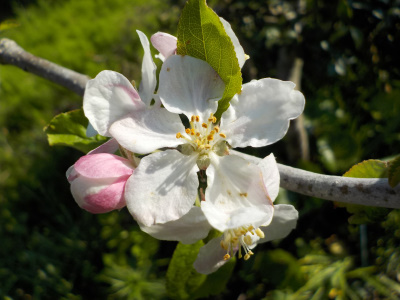
花粉が茶色くなったら受粉に使えるそうです。
今まで白いうちに受粉していました。
今年は沢山できるかな？
2019/04/21
まだ花が少ないですが受粉させました。
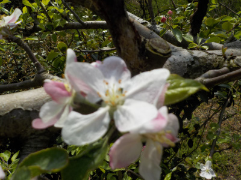
毎年沢山の花を受粉させてるけど、あんまり実が出来ないです。
何かやり方が間違ってるのかな。
2018/12/24
一度剪定してあったんですが、更に切りました。
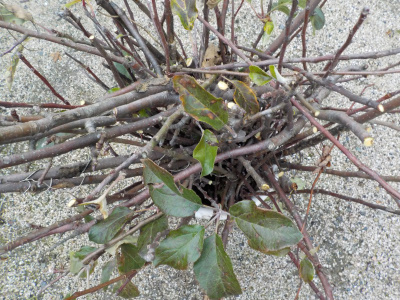
見れば見る程、切りたいって思う枝が出てきます。
2018/04/14
虫が受粉してくれると楽なのに。
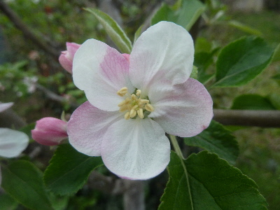
リンゴの近くにあまり虫はいませんでした。
もうちょっとしたら毛虫は発生するくせに。
なんかリンゴって自然な感じがしませんね。
人が管理しないとなくなってしまいそう。
野生の植物ではないのでそんなものかな。
2017/11/26
あんまり高くても受粉出来ないので、低めに剪定しました。
2メートルをちょっと超えるくらいかな。
20017/06/25
袋掛けのやり方を見ながら作業したんですが、林檎の向きがイラストと実際とが違っていてよく分かりませんでした。
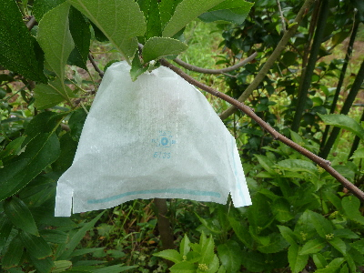
なので適当にかぶせました。
袋は大量に余っているので、落ちたら付け直せはいいです。
以前の記事
2017/04/16
リンゴにゾウムシがいました。
2016/04/03
毛虫の時期がやって来た。
2015/05/10
リンゴの小さい実が出来てます。
2015/04/18
林檎を受粉しました。
2014/10/09
林檎が狂い咲きです。
2014/04/26
林檎が毛虫だらけです。
2013/09/14
林檎が食べられてる。
2013/06/09
リンゴの実だ。
2013/04/20
リンゴの花が咲きました。
2013/04/13
リンゴの蕾は可愛い。
リンゴを沢山食べたいですが、ちょっとしか収穫できません。